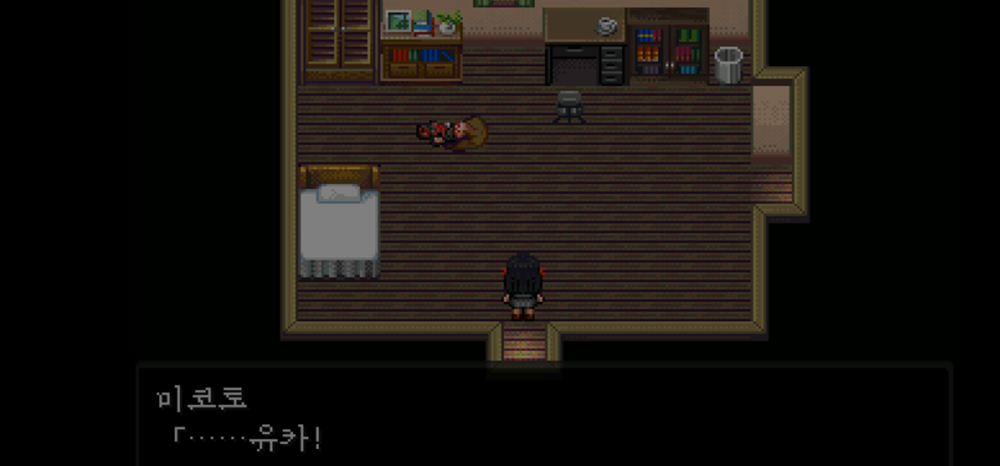

괴이증후군
<괴이증후군>은 한 챕터당 하나의 괴담을 사용하는데, 이는 게임으로서는 하나의 퀘스트로 스토리로서는 주인공인 미코토와 히토시가 겪는 갈등/고난으로 작용한다. 괴담에 얽힌 개별 사연들이 풀어지며 챕터당 기승전결이 존재하는 하나의 스토리 구조가 형성이 되고, 그 구조는 다시 카지로 가문의 저주라는 큰 스토리 구조를 형성한다. 각각의 괴담이 최종장으로 가는 교두보가 되는 형태.
<괴이증후군>은 친숙한 괴담을 익숙한 어드벤처 RPG란 형식에 담아내며 매력을 획득한다. 익숙함 속에 새로운 요소를 잘 담아낸 예시. 괴담 자체에는 익숙할지라도 카지로 가문에 대한 비밀을 좇아가며 플레이어는 점점 게임에 빠져든다. 인물들은 각자 괴이에 얽힐 수밖에 없었던, 괴이에 대한 특정 능력을 가지게 된 과거가 존재하는데, 이는 인물을 기능적으로 소모되지 않게 하고 인물을 입체적으로 만들어줬다. 적당한 호러 요소와 JRPG란 형식 덕분에 <괴이증후군>은 호러게임 유저와 JRPG 마니아층 타겟팅에 성공했다.
앞서 언급한 매력적인 스토리와 인물군 덕분에 일반 게임 유저층 또한 흡수했다. 나아가 인물 간의 관계성(케미라 일컫는), 일부 요소들의 열린결말이 2차창작으로 이어지며 더욱 활발한 소비로 이어지기도 했다.